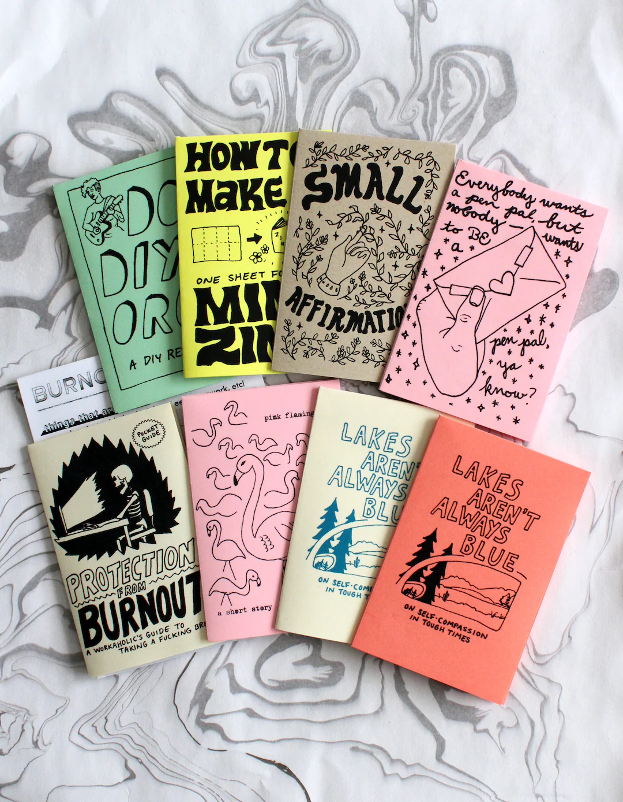
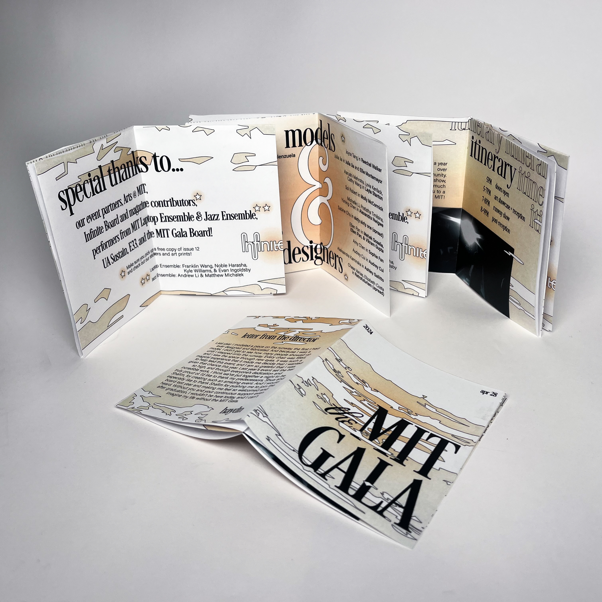
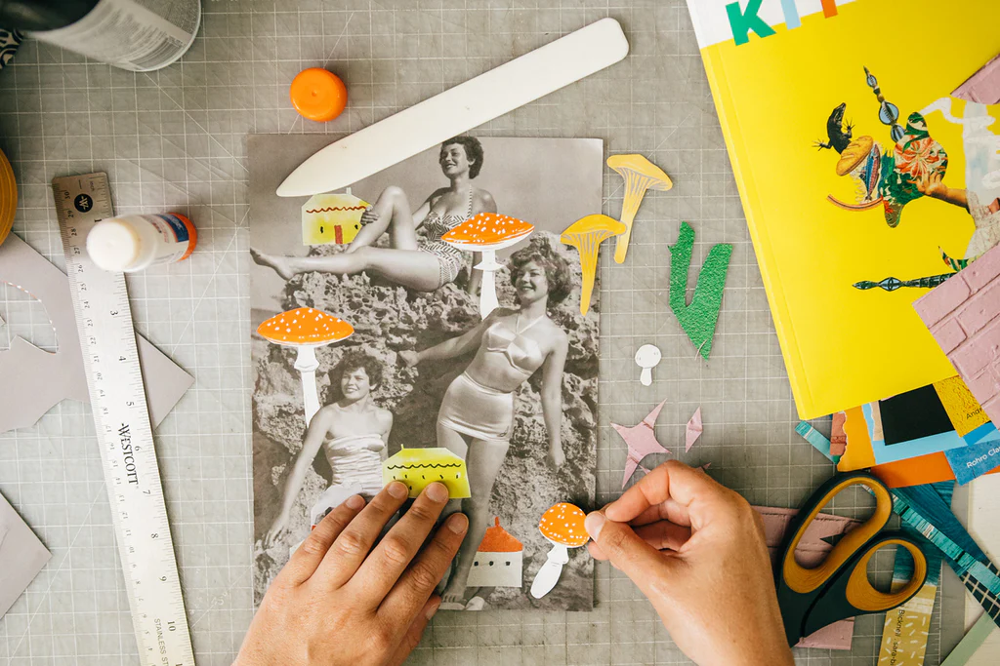
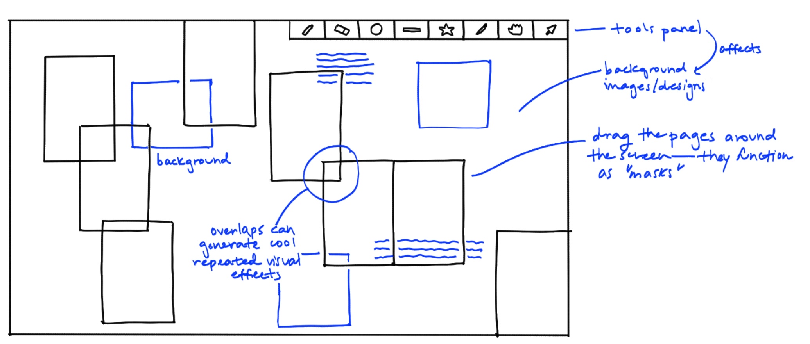
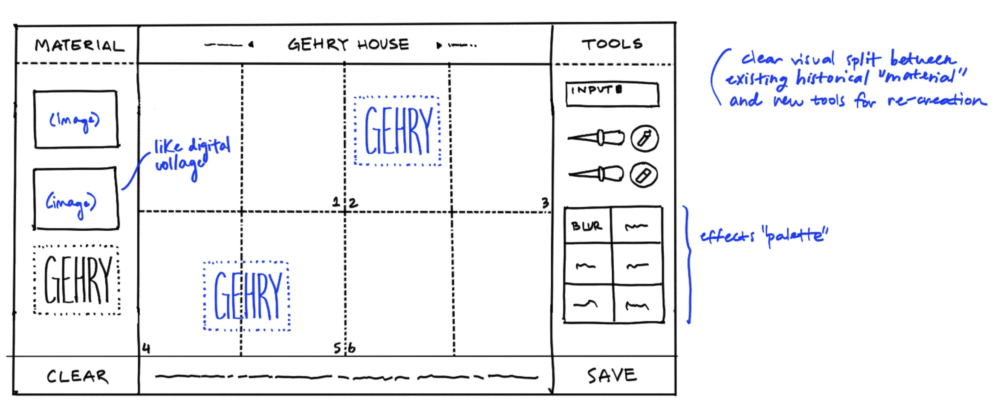
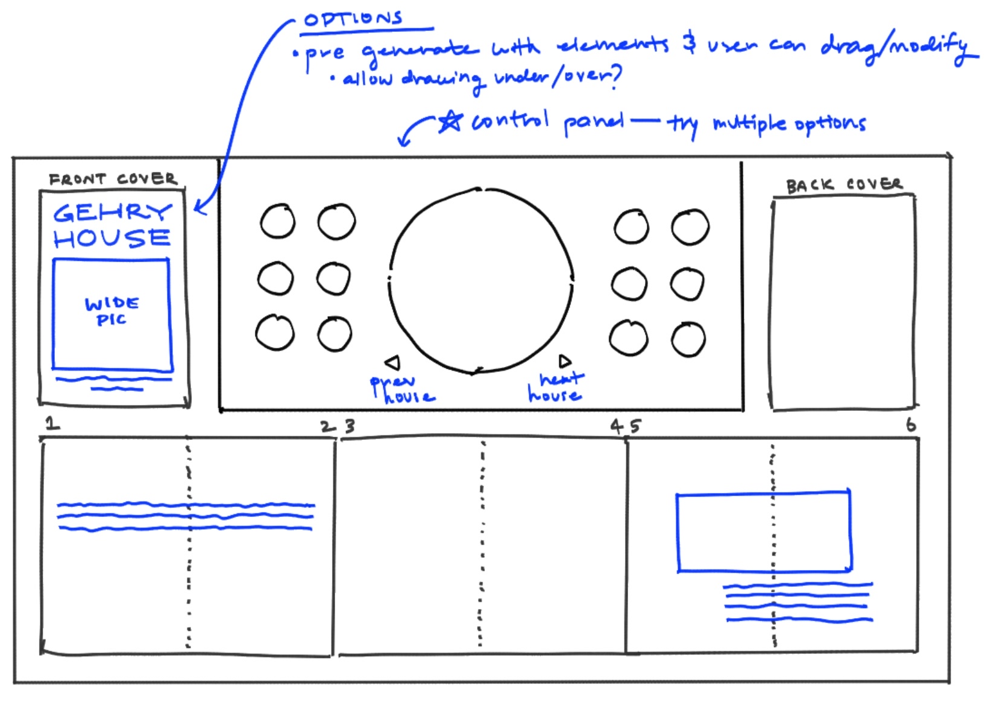
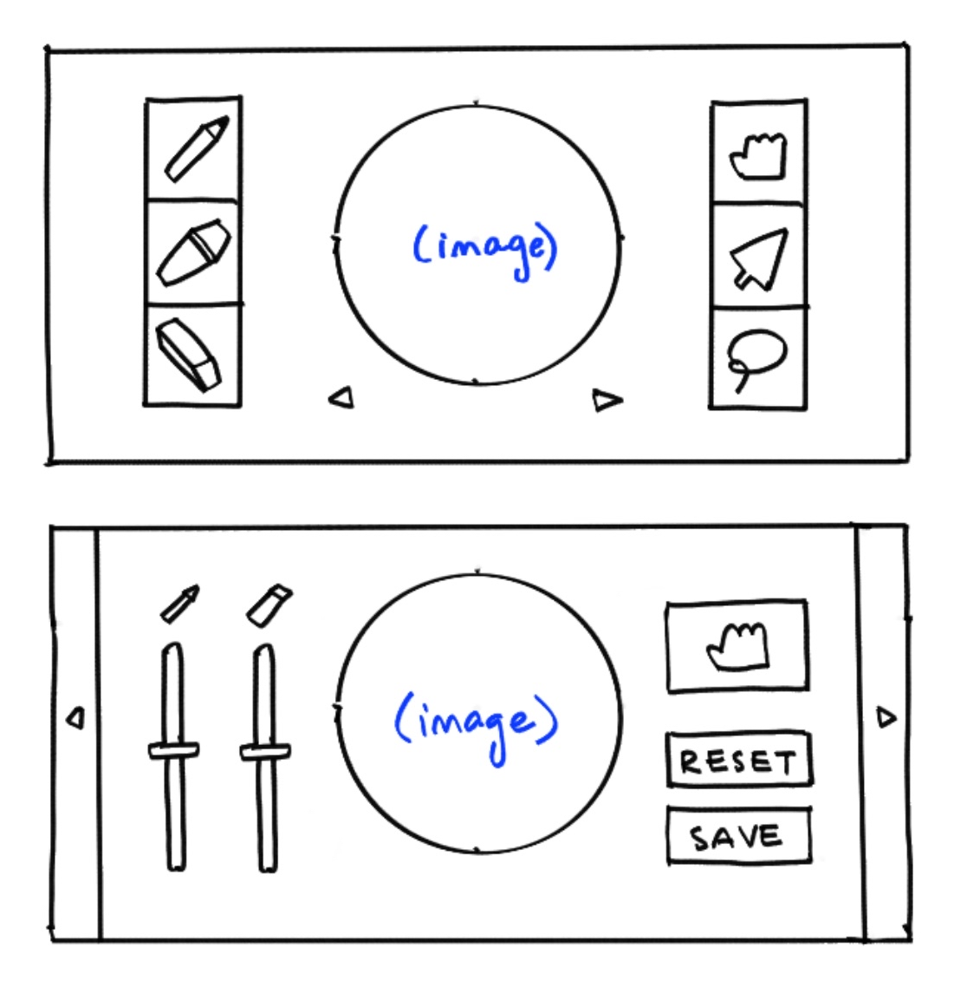

Zine Machine
Personal Project
Ongoing
Ongoing
UI/UX, Web Design/Development
Design Goal: To create an accessible and simple web-based tool for designing and printing 8-page folded zines.
I had the idea for this project when I was trying to design and print educational zines for my art history class.
I found that the process to go from Adobe Illustrator all the way to printing and cutting was unnecessarily cumbersome, requiring knowledge of color modes, bleed, swatches, etc.
zines are small, usually hand-made books made to share art and writing on just about any topic -->
zines are small, usually hand-made books made to share art and writing on just about any topic -->


<-- For example, for this zine I created in sophomore year, I had to go through several rounds of test prints and printer registration after the actual graphic design
before actually being able to print and assemble it.
Thus, I wanted to create an online tool that anyone could use to easily design and export zine print files.
Key Design Consideration: How can I keep the interface visually simple while still giving the user fine-grained tools?
I didn't want to just make a general purpose online paint tool — instead, I was more interested in evoking a sort of digital collage experience.
To that end, I wanted to keep the interface visually simple and immediately understandable,
akin to a table with collage supplies strewn across it.


My first idea was a freeform clipping-mask-based interface, where the user could drag around images, text, and the page borders themselves,
creating a new way of composing layouts.
However, I found this a bit too unstructured and not immediately intuitive.
However, I found this a bit too unstructured and not immediately intuitive.
Next, I went to the other end of the spectrum and mocked up a much more standard design interface. The left column would contain collage elements
(e.g. existing images and text), whereas the right column would include various collage tools reminiscent of physical tools, such as scissors, a "glue stick,"
and pens and pencils.
However, I thought that this design was a bit too on the nose, and it was a little too busy.
However, I thought that this design was a bit too on the nose, and it was a little too busy.


Finally, I settled on a happy medium in which the user would have access to a limited set of collage tools and media.
The pages would be laid out in such a way that still enabled interesting clipping-mask-based interactions and animations.

Currently, I'm implementing a low-fidelity prototype using p5.js, which I will use to test with a couple users and determine how
I want the central tools panel to look. Updates soon!
<-- ideas for the central tools panel, inspired by the aesthetic of DJ boards
<-- ideas for the central tools panel, inspired by the aesthetic of DJ boards